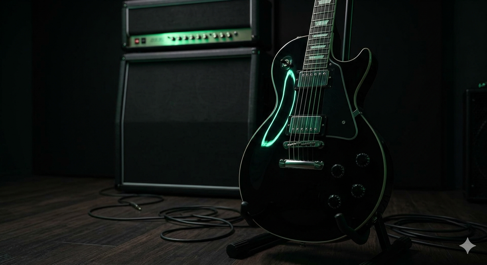

Riffs que marcaron la historia
Desde los sonidos oscuros de Black Sabbath hasta la energía cruda de AC/DC, el rock ha sido la banda sonora del desarrollo de software desde sus inicios.
Escuchar distorsión mientras se compila código en C++ o se configura una base de datos en Firebase ayuda a mantener el enfoque y la intensidad necesaria para resolver problemas complejos.
